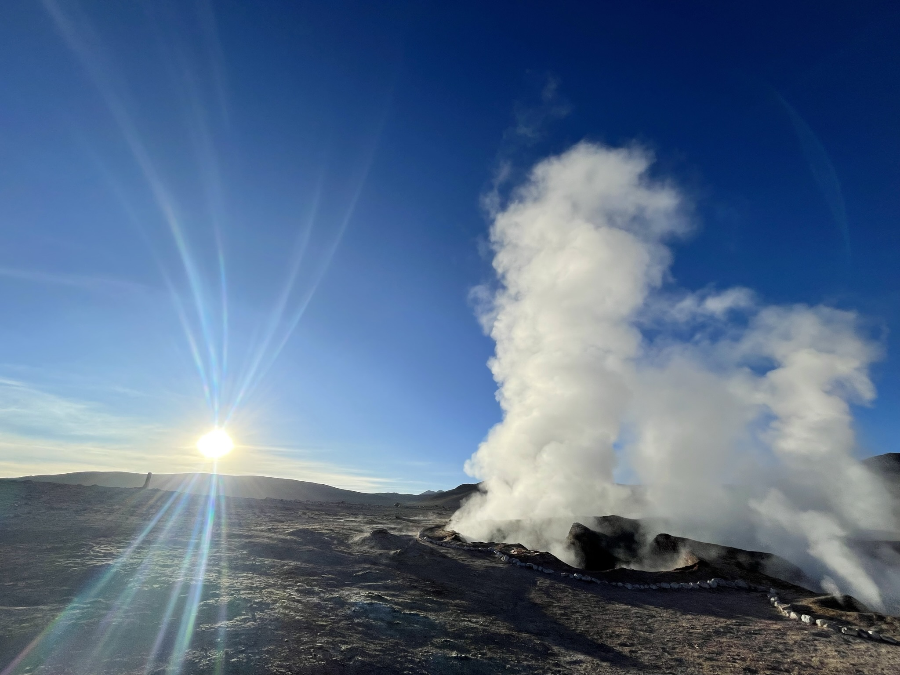
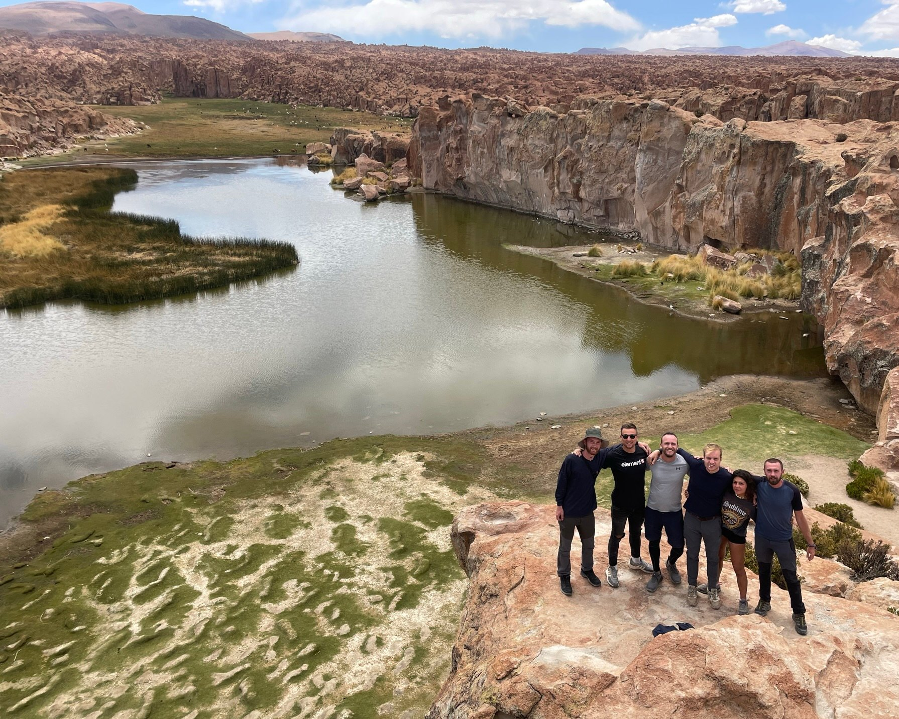
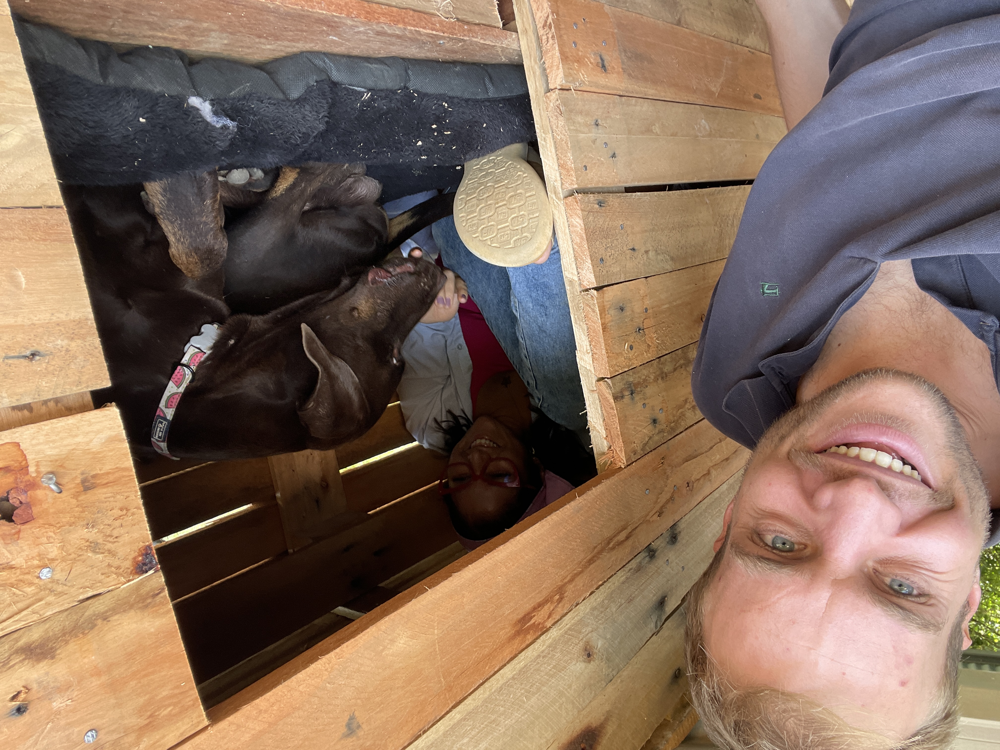
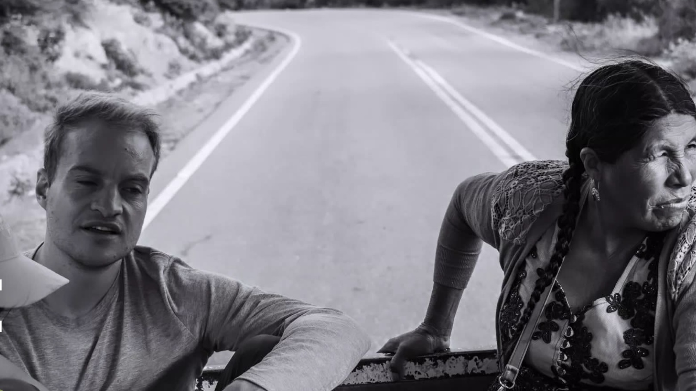
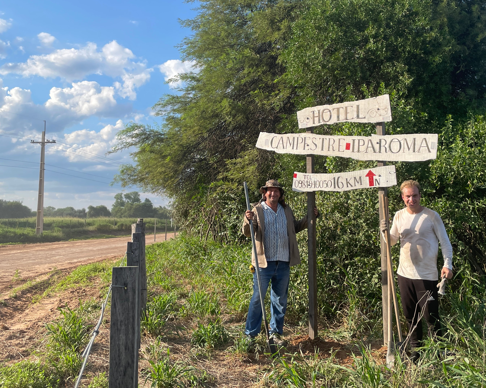
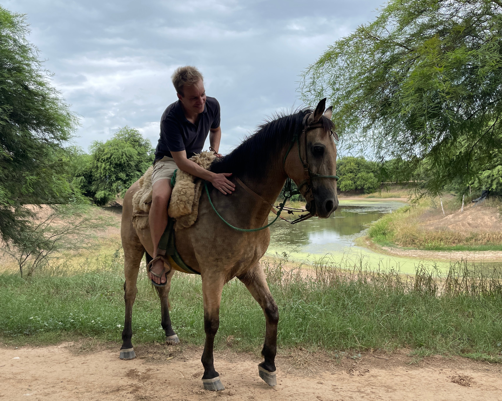

17 Travelling
through time
The workaway marathon,
Salaar de Uyuni and
back to civilization

We travel through time, four months ahead, from December 1, 2023 to April 1, 2024. Not because nothing happened. A lot happened, but there was no motivation to write. Lots of volunteer work. And if you also have a job as a programmer, that can be a challenge and writing doesn't always happen.
You might think: you are in Peru, Bolivia and Paraguay, that is fantastic! And it is, but you get used to everything. Constantly adapting to a new environment remains a challenge. “Then why don't you just come back home?” But at the same time I also get a lot of energy from this adventure. And with the thought that my savings are slowly but surely growing, it also gives me more options for the future. For example, it will sometimes be difficult and lonely for a soldier who has been training abroad for a while, but he will also be proud of the experience and not dissatisfied with the money saved. When you compare all the ways to save, this way of living as a digital nomad may not be such a bad one. You just have to be prepared to be away from friends and family for a longer period of time at a young age, which is certainly not always easy.
So where do we start this blog? December, when after a month of workaway volunteering on Amazon reforestation project Florestania, a la Expedition Robinson, I finally emerged from the Bolivian jungle and took the plane from north to south Bolivia. There in Uyuni I met Dutch friend Koen from Barcelona who was also travelling in Bolivia. Together with a guide and 3 other travellers we embarked on a three-day jeep tour through the desert along the Argentinian border. The trip through this area, which includes salt flats as white as snow, lakes in different colours with flamingos, geysers, volcanoes, thermal baths, gorges, and above all, enormous miles of no man's land, was incredibly beautiful. In addition, it was of course also very nice to have an old-fashioned chat with friend Koen, this time on the other side of the world.
 From the dry desert in Uyuni I took the night bus to the picturesque Bolivian city of Sucre. Instead of looking for a room with everything for yourself via Airbnb, I now consciously looked for a room in a shared house, which led me to the friendly retired couple Zene and Pura. Perfect for having a chat sometimes and doing your own thing at the same time. I was amazed at the number of churches and how religious the people are here. At the beginning of December, the entire house was already decorated in Christmas style, including a Christmas tree and a stall. I was invited by them to visit their second home outside Sucre. Isn't that the great thing about travelling that you can visit an unknown place from one moment to the next with unknown people? At the start of the holidays, I said goodbye to this warm family and moved to the Kultur Berlin hostel across the street so that I could be among the travellers. It was fun, but sometimes difficult to connect with the backpackers. Moreover, the people I met at Christmas left as soon as Christmas was over. so that I could look for new people again on New Year's Eve. So not quite the way I experienced Christmas in 2015 in Hanoi, Vietnam, when I celebrated perhaps the most memorable holidays ever with Bavelse (NL) friends Wout and Merijn. During a 'free walking tour' I met another lady from Bavel: Rosalie Raas, whose sister I knew. Then the world is very small again.
From the dry desert in Uyuni I took the night bus to the picturesque Bolivian city of Sucre. Instead of looking for a room with everything for yourself via Airbnb, I now consciously looked for a room in a shared house, which led me to the friendly retired couple Zene and Pura. Perfect for having a chat sometimes and doing your own thing at the same time. I was amazed at the number of churches and how religious the people are here. At the beginning of December, the entire house was already decorated in Christmas style, including a Christmas tree and a stall. I was invited by them to visit their second home outside Sucre. Isn't that the great thing about travelling that you can visit an unknown place from one moment to the next with unknown people? At the start of the holidays, I said goodbye to this warm family and moved to the Kultur Berlin hostel across the street so that I could be among the travellers. It was fun, but sometimes difficult to connect with the backpackers. Moreover, the people I met at Christmas left as soon as Christmas was over. so that I could look for new people again on New Year's Eve. So not quite the way I experienced Christmas in 2015 in Hanoi, Vietnam, when I celebrated perhaps the most memorable holidays ever with Bavelse (NL) friends Wout and Merijn. During a 'free walking tour' I met another lady from Bavel: Rosalie Raas, whose sister I knew. Then the world is very small again.
In the first days of 2024 I travelled via Sucre in southern Bolivia to the outskirts of Cochabamba in central Bolivia where my second Workaway started. This was a project that was still in its infancy, set up by the originally Asian woman Susana, who on her own had houses built in the middle of nature on a river, which would one day become a wellness retreat. But she was so busy with her work-from-home job as a translator that she barely had time for the project itself. If you don't quite have the drive that the owners of the previous workaway had, and you have to pull the cart alone, then such a project will of course not make much progress. I was allowed to mess around in the garden with a hoe, and then I was given a stack of pallets to make a doghouse. The Workaway was halfway through and Veronica, the cheerful lady I had the pleasure of meeting during my first week in Peru, called that her holiday to Ecuador had been cancelled due to an escaped drug lord. She came to visit me for the third time and it was again very pleasant. I can hardly explain how nice it is that she also works digitally and that being together almost happens automatically without you having to say, for example, 'But I still have to work for another hour'. “Would you mind if I turned on the NAC football club?” I ask her. 'No, just turn it on! If you like it, then I like it too.' The fact that we click so well is of course fantastic, but it also makes it difficult. partly because when things become more serious, the question also arises whether you want to keep visiting each other, which of course also has consequences for your trip.
As the days progressed, I became increasingly uncomfortable with the somewhat cynical smile of the owner, although I am sure she had no bad intentions. Dynamics are a strange thing. Sometimes you have a click with person A and also with B, but when there are three of us, that click suddenly disappears. A workaway is not only 'working' together but also 'living' together. You really get to know each other and over the days the smallest irritations naturally pile up. So I left this workaway a little earlier than planned, which I exchanged for my third workaway in the third South American country, namely Paraguay. On the way here, I and dozens of other motorists had to lift stones off the road due to government protests to continue driving and eventually even took a plane because there were so many stones that the only road to Paraguay was impassable.
After 3 days of travelling I finally arrived in what they call the Chaco in Paraguay. What was once miles of tropical rainforest is now cut down and bone-dry grassland. Huge plots of grasslands with farms, each as large as Bavel. It is so incredibly hot here (40+) and dry that if you hang your laundry here, it can fold again after 10 minutes. The farm, which was also a hotel, was called Iparoma and was located in the Paraguayan town of Filadelfia. “Do you also eat meat?” was the first thing they asked me. It was a nice workaway, I soon felt at home. After lunch, when everyone had a siesta, I made a cup of coffee and started programming in the canteen. Then the whole hotel was silent for a while and I could concentrate on the work. The friendly and patient employee Julio gave clear instructions to the volunteers and taught me how to build a cement wall, replace a broken car tire, how to make flour from grain and how to catch and slaughter a sheep with a lasso. When we drove up with the black cart, the sheep already knew what time it was. Julio also taught me funny facts such as that the 'Club Olympia' cow, which is also kept here, is the white and black cow from the Netherlands, or that a sheep dog must drink milk from the sheep in the first week of its life to become a successful sheepdog.
 The standard trip that many tourists in South America make is from Colombia (north) to Argentina (south). Paraguay is often skipped, so you will find a much more diverse type of traveller. Just consider the volunteers on this workaway. The Canadian Robin who drove all the way from Canada here in his own van, or the 48-year-old German carpenter Andreas about whom you could write a book. He says he doesn't like travelling at all and doesn't really know why he is here. That travelling today with mobile phones is no longer what it was in the 90s, when people still took time for you. Of course there is something to be said for that. When his relationship broke up and he realised he didn't need many things, he decided to live in a cave for a month until loneliness consumed him. He is a good guy and we regularly went together as soon as dusk fell in search of wildlife. Scorpions, ostriches, armadillos, skunks, the biodiversity was absurdly high. A short walk around the yard and it was teeming with birds. Curlew Owls, Woodpeckers, Hawks, Water Rails, Vultures. Birds that you would go on a day excursion to in the Netherlands, you saw so often that you almost had to get used to them.Two tourists, a father and son, visited the Iparoma accommodation and as an assistant I was allowed to go on safari with them and the owner Marylin for four days. Navigation was not necessary, because Paraguay is basically a long road with a lot of side roads, impossible to get lost. Along the way we come across several nature reserves that use wildlife cameras to recognize animals. Of course I can't resist telling them that they can also automatically recognize the animals with our website BOX21. We were of course hoping to spot a jaguar, the top predator of South America. Unfortunately that didn't work, but we did see a Tapir, a large boar with a remarkably long nose.
The standard trip that many tourists in South America make is from Colombia (north) to Argentina (south). Paraguay is often skipped, so you will find a much more diverse type of traveller. Just consider the volunteers on this workaway. The Canadian Robin who drove all the way from Canada here in his own van, or the 48-year-old German carpenter Andreas about whom you could write a book. He says he doesn't like travelling at all and doesn't really know why he is here. That travelling today with mobile phones is no longer what it was in the 90s, when people still took time for you. Of course there is something to be said for that. When his relationship broke up and he realised he didn't need many things, he decided to live in a cave for a month until loneliness consumed him. He is a good guy and we regularly went together as soon as dusk fell in search of wildlife. Scorpions, ostriches, armadillos, skunks, the biodiversity was absurdly high. A short walk around the yard and it was teeming with birds. Curlew Owls, Woodpeckers, Hawks, Water Rails, Vultures. Birds that you would go on a day excursion to in the Netherlands, you saw so often that you almost had to get used to them.Two tourists, a father and son, visited the Iparoma accommodation and as an assistant I was allowed to go on safari with them and the owner Marylin for four days. Navigation was not necessary, because Paraguay is basically a long road with a lot of side roads, impossible to get lost. Along the way we come across several nature reserves that use wildlife cameras to recognize animals. Of course I can't resist telling them that they can also automatically recognize the animals with our website BOX21. We were of course hoping to spot a jaguar, the top predator of South America. Unfortunately that didn't work, but we did see a Tapir, a large boar with a remarkably long nose.
The animals were not only spotted, some also ended up on our plates a little later. It looked a bit like the Wild West. It rained for the first time in a few weeks, bringing with it so many caterpillars that you couldn't take a step outside without stepping on one. In the morning we milked the cows, fed the chickens and vacuumed the swimming pool. The heavy physical work took some getting used to, but luckily we were often rewarded with asado (bbq meat) and tereree (tea herbs in ice-cold water). A cup with a straw was then passed around from which everyone took turns drinking. In Paraguay, the local people not only speak Spanish, but also the indigenous Guarani language. The people are really friendly and patient. The owners of the Iparoma farm were part of the Mennonite community, German migrants who have come to live in Paraguay since 1930, to the consternation of the indigenous population such as the Ayoreos. German is spoken in many places and when I went shopping, I saw people everywhere with blonde hair just like me. They live there as if it is the most normal thing in the world. In the Mennonite village of Neu-Halbstad there is even a colony that came to Paraguay after the Second World War. Imagine having fought such a war and then continuing your life here.
They have flown by, travelling through time. 5 months workaway in the most remote places of South America. It was crazy again. Living as a digital nomad in the Bolivian jungle and the very dry Paraguayan chaco. I am very grateful for the special people I have met and the experiences that will stay with me. And I am glad that this period has helped to take a step towards a more secure existence. It's high time to return to civilization and treat myself to a little reward, for which I travel to Asunción, the capital of Paraguay. So undoubtedly more about that in the next blog!